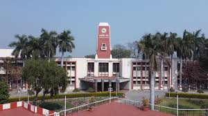

Welcome to Prof. MGH Zaidi Research Group
Prof. MGH Zaidi
Designation: Professor, Department of Chemistry
University: Govind Ballabh Pant University of Agriculture & Technology, Pantnagar, Uttarakhand, India
Email: mghzaidi.cbsh@gbpuat-tech.ac.in
Tel: +91-9411159853
Google Scholar: View Profile
Dr. M.G.H. Zaidi is a professor at the Department of Chemistry and CEO of the Intellectual Property Management Center at Govind Ballabh Pant University, Pantnagar. He is a dedicated researcher, academic leader, and mentor.
His work in polymer science has contributed to structural engineering, electronics, biomedical sciences, and energy storage. Supported by national and international organizations, his research focuses on solving real-world scientific challenges.
Dr. Zaidi has mentored around 70 students, including research fellows and Ph.D. candidates. With nearly 150 publications and multiple patents, his work continues to inspire advancements in polymer science and technology.
